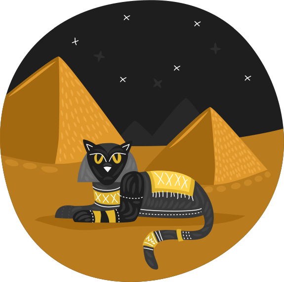
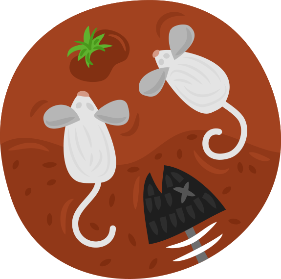
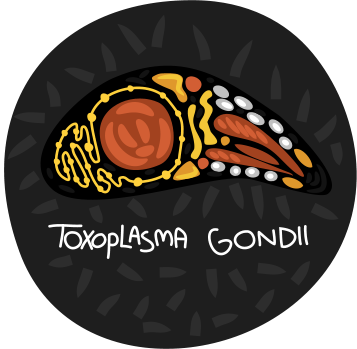
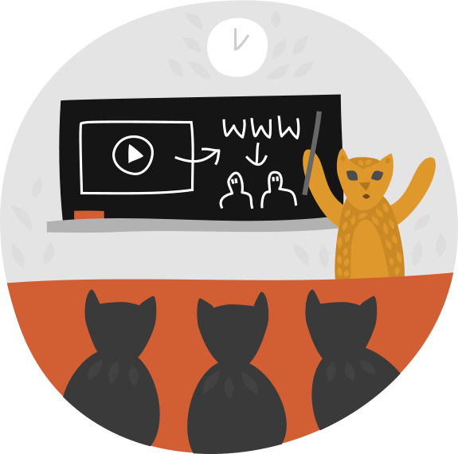

sdlfkjdslkfjdslkj
sdlfkjdslkfjdslkj
TWITTER NEWS - will be on top of the map
MAP WILL GO HERE
IN THE BEGINNING

IN THE BEGINNING
Cats (Felis silvestris catus), known and worshiped in Ancient Egypt as "Mau", were important in ancient Egyptian society. It has been estimated that cats domesticated humans in Egypt around 10,000 years ago.
For a few Thousand years the Egyptians on the in upper and lower Egypt were still engaged in a religion centering around the worship of cats and gods in the shape of cats.
The cats were happy for a few thousand years, until the Egyptian culture was destroyed, and the cats left desolated.
As the years went by, the cats' status was decreasing and they were left with only mice as their main food source.
Cats developed Toxoplasma gondii (tŏk'sə-plāz'mə gŏn'dē-ī'), which is a dangerous unfamiliar parasite, that caused mice to offer themselves to the cats for easy meal. Infected mice usually lose their innate fear of cats and turn into zombies. The infection can have a permanent effect since they do not return to fear the cats even after the parasite is no longer detectable in their brains.
Today, in humans, Up to 80% of the population may be infected, depending on eating habits and exposure to cats.
About 50 years ago cats started making their move inside the houses of humans, no one asked any questions…
Cats today are keeping a close eye on their owners. Years of closely watching every move of their owners have made them capture life patterns and habits. This had led them to come up with their next and final plan - taking over the web.
the humans have now became internet zombies, infecting the web…
What the toxoplasma has cost us:
Total number of monthly active Facebook users 1,310,000,000
Total number of minutes spent on Facebook each month 640,000,000
Percent of all Facebook users who log on in any given day 48 %
Percent of 18-34 year olds who check Facebook when they wake up 48 %
Users Upload 72 Hours of (Cat) Videos per Minute to YouTube!
statistics…
Our extension shows the user the infected parts of the web, gives alerts and eye witness news.
This extension will notify you how to avoid the infected web-sites and keep our internets safe from harms!
Save the humans!




The Restaurant at the End of the Universe (1980)
The Restaurant at the End of the Universe is the second book in the Hitchhiker's Guide to the Galaxy comedy science fiction pentalogy by Douglas Adams. It was originally published by Pan Books as a paperback. The book was inspired by the song "Grand Hotel" by British rock band Procol Harum. It takes its name from Milliways, the Restaurant at the End of the Universe, one of the settings of the book.
The Restaurant at the End of the Universe begins just as The Hitchhiker's Guide to the Galaxy ended. Arthur Dent, Ford Prefect, Trillian, and Zaphod Beeblebrox have just left the planet Magrathea when they are attacked by a Vogon ship. They find they are unable to use the Improbability Drive to escape, as Arthur has accidentally jammed the computer with a simple request for a cup of tea which proved a rather difficult problem. Luckily, an ancestor of Zaphod's, Zaphod Beeblebrox the Fourth, saves them.
Life, the Universe and Everything (1982)
Life, the Universe and Everything is the third book in the five-volume Hitchhiker's Guide to the Galaxy science fiction series by British writer Douglas Adams. The title refers to the Answer to Life, the Universe, and Everything.
The story was originally outlined by Adams as Doctor Who and the Krikkitmen to be a Tom Baker Doctor Who television six-part story, but was rejected by the BBC. It was later considered as a plotline for the second series of the Hitchhiker's TV series, which was never commissioned.
A radio adaptation of Life, the Universe and Everything was recorded in 2003 under the guidance of Dirk Maggs, starring the surviving members of the cast of the original Hitchhiker's radio series. Adams himself, at his own suggestion, makes a cameo appearance; due to his death before production began on the series, this was achieved by sampling his character's dialogue from an audio book of the novel read by Adams that was published in the 1990s. The radio adaptation debuted on BBC Radio 4 in September 2004.
The Meaning of Liff (1983)
The book is a "dictionary of things that there aren't any words for yet". Rather than inventing new words, Adams and Lloyd picked a number of existing place-names and assigned interesting meanings to them; meanings that can be regarded as on the verge of social existence and are ready to become recognisable entities.
All the words listed are toponyms and describe common feelings and objects for which there is no current English word. Examples are Shoeburyness ("The vague uncomfortable feeling you get when sitting on a seat that is still warm from somebody else's bottom") and Plymouth ("To relate an amusing story to someone without remembering that it was they who told it to you in the first place").
The book cover usually bears the tagline "This book will change your life", either as part of its cover or as an adhesive label. Liff (a village near Dundee in Scotland) is then defined in the book as "A book, the contents of which are totally belied by its cover. For instance, any book the dust jacket of which bears the words, 'This book will change your life'."
So Long, and Thanks for All the Fish (1984)
So Long, and Thanks for All the Fish is the fourth book of the Hitchhiker's Guide to the Galaxy "series" written by Douglas Adams. Its title is the message left by the dolphins when they departed Planet Earth just before it was demolished to make way for a hyperspace bypass, as described in The Hitchhiker's Guide to the Galaxy. The phrase has since been adopted by some science fiction fans as a humorous way to say "goodbye" and a song of the same name was featured in the 2005 film adaptation of The Hitchhiker's Guide to the Galaxy.
Dirk Gently's Holistic Detective Agency (1987)
Dirk Gently's Holistic Detective Agency is a humorous detective novel by Douglas Adams, first published in 1987. It is described by the author on its cover as a "thumping good detective-ghost-horror-who dunnit-time travel-romantic-musical-comedy-epic".
The book was followed by a sequel, The Long Dark Tea-Time of the Soul. The only recurring major characters are the eponymous Gently, his secretary Janice Pearce and Sergeant Gilks. Adams also began work on another novel, The Salmon of Doubt with the intention of publishing it as the third book in the series, but died before completing it.
A BBC Radio adaptation starring Harry Enfield was broadcast on BBC Radio 4 in October 2007. A second series based on the sequel was broadcast on October 2008. A 2010 television adaptation by Howard Overman for BBC Four borrowed some of the characters and some minor plot elements of the novel to create a new story.
The Long Dark Tea - Time of the Soul (1988)
The Long Dark Tea-Time of the Soul is a 1988 humorous fantasy detective novel by Douglas Adams. It is the second book by Adams featuring private detective Dirk Gently, the first being Dirk Gently's Holistic Detective Agency. The title is a phrase which appeared in Adams' novel Life, the Universe and Everything to describe the wretched boredom of immortal being Wowbagger, the Infinitely Prolonged, and is a play on the theological treatise Dark Night of the Soul, by Saint John of the Cross.
LAST CHANCE TO SEE (1990)
"Last Chance To See" was published in 1990 and is yet another unexpected book in Douglas Adams' bibliography. For many it is his very best work.
We follow Douglas who travels across the globe with zoologist Mark Cawardine in search for endangered animal species. This may seem fairly dull to many, but as always Douglas turns it into a great read, very funny and fascinating from the first to the last page.
This book will stay unknown to most of the public even though it received great critical success. Indeed, many readers were not interested for the only reason that it is not a fictional book, which is a great pity. Maybe with time and ever growing pressure on the world's environment, "Last Chance To See" will rightfully claim its readership.
In parallel to the book, Douglas Adams also recorded a radio series for the BBC on this same theme. A multimedia CD-Rom version of "Last Chance" was also released, featuring Douglas reading the book's text whilst a beautiful photographic slide show illustrates (the CD-Rom includes 800 photographies).
mostly harmless (1992)
Mostly Harmless is a novel by Douglas Adams and the fifth book in the Hitchhiker's Guide to the Galaxy trilogy. It is described on the cover of the first editions as "The fifth book in the increasingly inaccurately named Hitchhikers Trilogy". It was the last Hitchhiker's book written by Adams.
The title derives from a joke early in the series, when Arthur Dent discovers that the entry for Earth in The Hitchhiker's Guide to the Galaxy consists, in its entirety, of the word "Harmless". His friend Ford Prefect, a contributor to the Guide, assures him that the next edition will contain the article on Earth that Ford has spent the last 15 years researching—somewhat cut due to space restrictions, but still an improvement. The revised article, he eventually admits, will simply read "Mostly harmless". It later turns out that Ford had written a long essay on how to have fun on Earth, but the editors in the guide's main office building edited everything out. Later in the series, Ford is surprised to discover that all of his contribution had been edited back into the Guide, prompting his reunion with Arthur on the alternative Earth in So Long, and Thanks for All the Fish.
The Salmon of Doubt (2002)
The Salmon of Doubt: Hitchhiking the Galaxy One Last Time is a posthumous collection of previously published and unpublished material by Douglas Adams. It consists largely of essays about technology and life experiences, but its major selling point is the inclusion of the incomplete novel on which Adams was working at the time of his death, The Salmon of Doubt (from which the collection gets its title, a reference to the Irish myth of the Salmon of Knowledge).
Adams admitted that while he originally planned on writing a third Dirk Gently book, the ideas which he had for it would have fit better into another Hitchhiker's book: "A lot of the stuff which was originally in The Salmon of Doubt really wasn't working", and he planned on "salvaging some of the ideas that I couldn't make work in a Dirk Gently framework and putting them in a Hitchhiker framework... and for old time's sake I may call it The Salmon of Doubt."